<title>Slides: The AI frameworks</title>
<link rel="stylesheet" href="../../../../course.css">

<header>
  <div class="wrap">
    <div class="crest">
      <a class="uc" href="../../../../index.html">Berkeley</a>
      <span class="prog">The Business of Data</span>
      <span class="term">Winter 2027</span>
    </div>
    <div class="mast-week">
      <a class="back" href="../../../../week4.html">&larr; Week 4</a>
      <p class="wknum">Slides</p>
      <h1>The AI frameworks</h1>
      <p class="role">Segment 5 of 6 &middot; Model risk management</p>
    </div>
  </div>
</header>

<section>
  <div class="wrap">
    <p class="intro">12 slides, in the order they appear in the lecture.</p>
    <div class="gallery">
      <figure>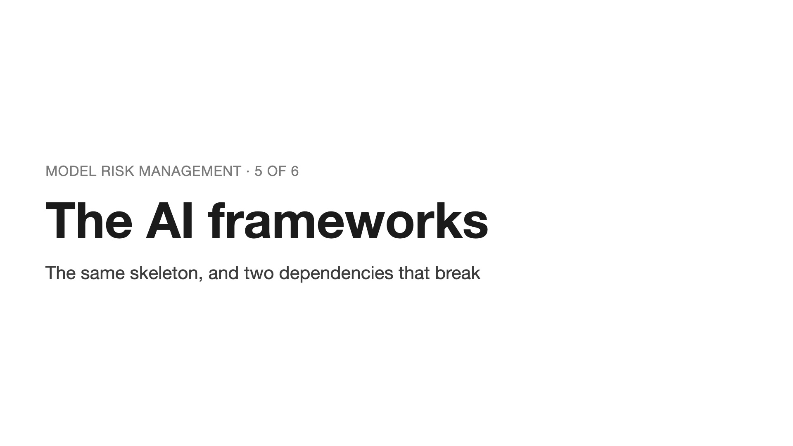<figcaption>1</figcaption></figure>
      <figure>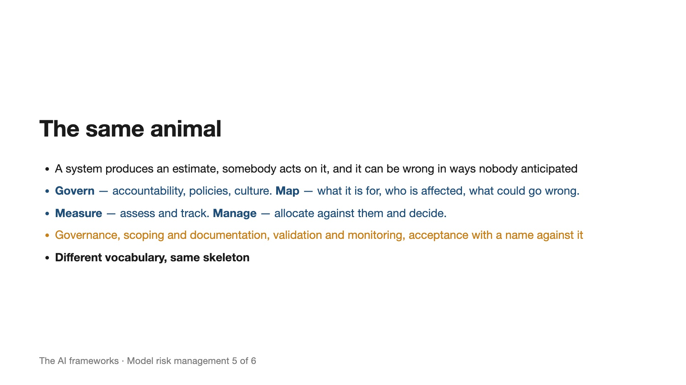<figcaption>2</figcaption></figure>
      <figure>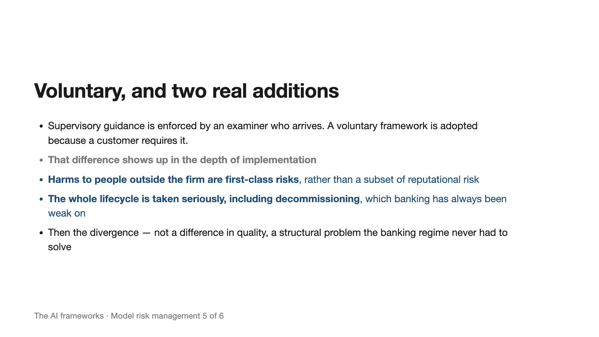<figcaption>3</figcaption></figure>
      <figure>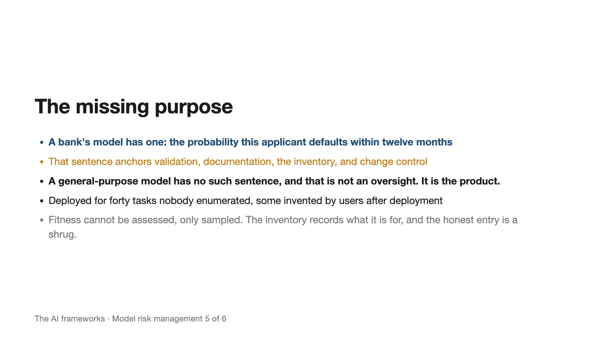<figcaption>4</figcaption></figure>
      <figure>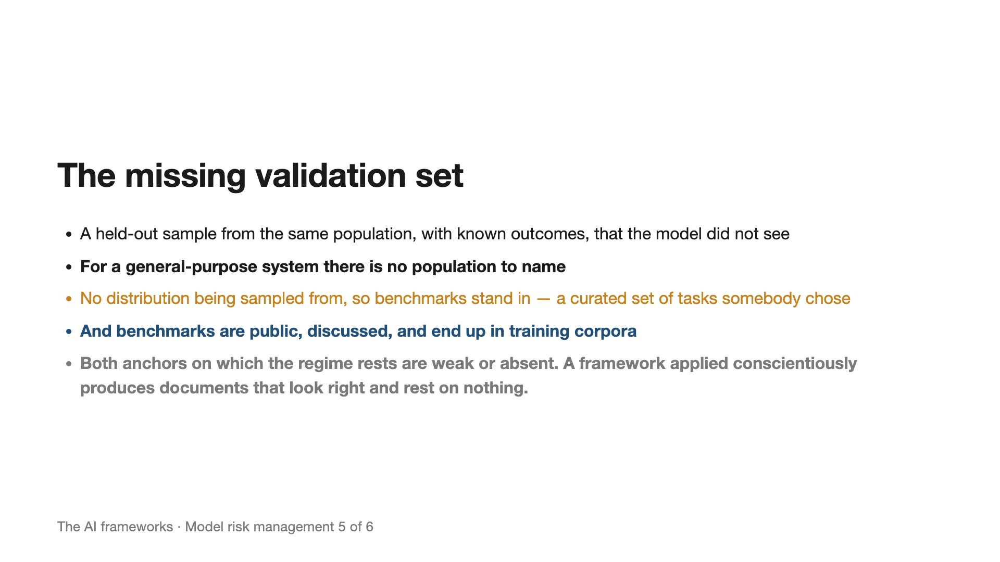<figcaption>5</figcaption></figure>
      <figure>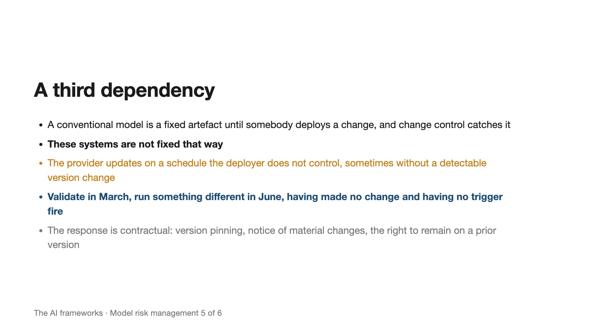<figcaption>6</figcaption></figure>
      <figure>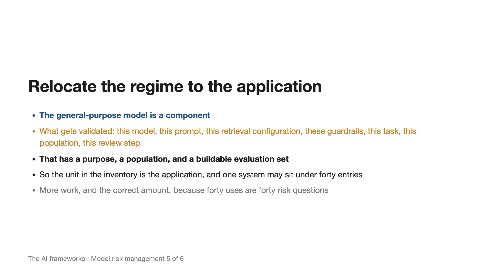<figcaption>7</figcaption></figure>
      <figure>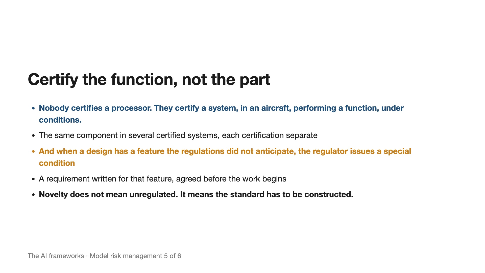<figcaption>8</figcaption></figure>
      <figure>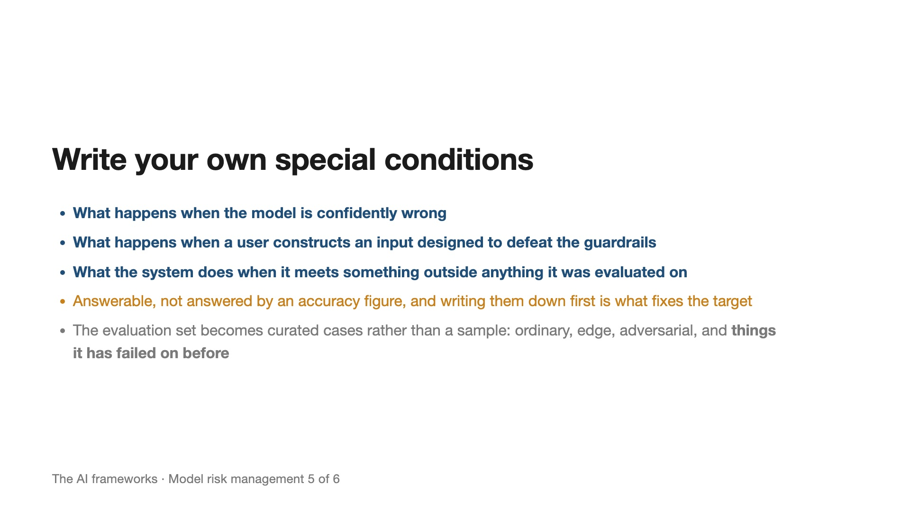<figcaption>9</figcaption></figure>
      <figure>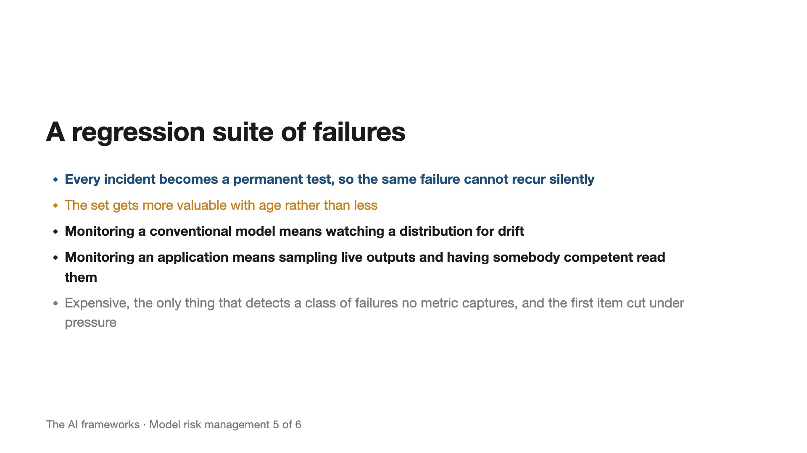<figcaption>10</figcaption></figure>
      <figure>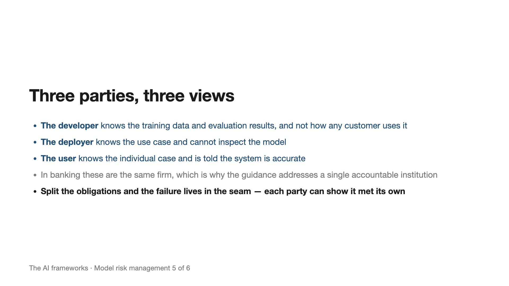<figcaption>11</figcaption></figure>
      <figure>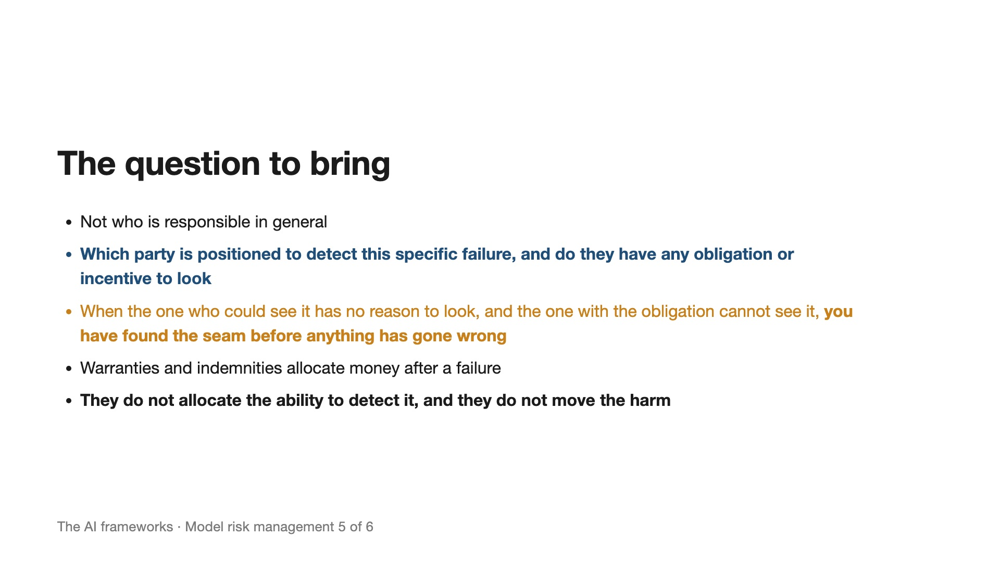<figcaption>12</figcaption></figure>
    </div>
  </div>
</section>

<footer>
  <div class="wrap">
    <b>The Business of Data</b> &middot; Week 4 &middot;
    <a href="../../../../week4.html">Back to week 4</a> &middot;
    <a href="https://youtu.be/6-6eIDzoKXQ?t=3514">Video</a> &middot;
    <a href="../../audio/05_the_ai_frameworks.m4a">Audio</a> &middot;
    <a href="../../scripts/05_the_ai_frameworks.html">Script</a>
  </div>
</footer>

<script data-goatcounter="https://johnsanterre.goatcounter.com/count"
        async src="//gc.zgo.at/count.js"></script>
